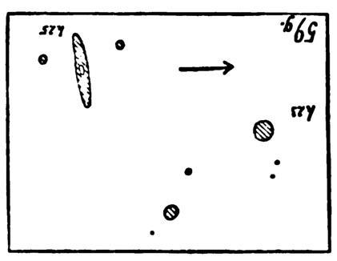
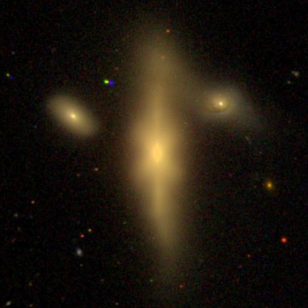
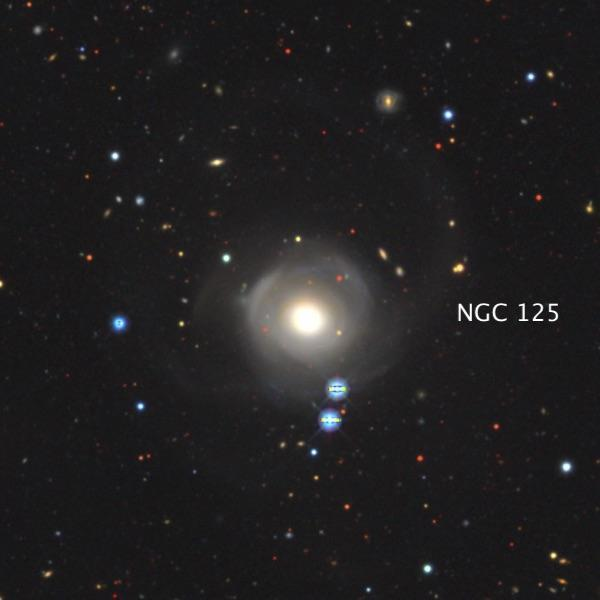

NGC 128 Group
- Name: NGC 128 Group = LGG 6 (main galaxy data)
- RA: 00h 29m 15.1s
- Dec: +02° 51' 51" (2000)
- Constellation: Andromeda
- Type: SB0 peculiar
- Size: 2.5'x0.7'
- P.A.: 1°
- Magnitudes: 11.8V, 12.8B
Akarsh Simha mentioned the NGC 128 group in a post back on Dec. 14, 2015, but it's never been an OOTW and it's certainly worth another look. The central compact group consists of 5 galaxies -- NGC 125, 126, 127, 128 and 130. A larger group (LGG 6) based on recessional velocities consists of the last 4 NGCs, as well as UGCs 275, 277, 281, 282, 283 and probably IC 17. These lie at a rough distance of 180 million l.y. (depending on your choice of Hubble constant). NGC 125 has a larger recessional velocity and may lay in the background.

William Herschel discovered NGC 128 (as well as NGC 125) on December 25, 1790 (sweep 985). He described it as "pretty bright, very small, round, very gradually much brighter in the middle, pretty well defined on the margin. The most detailed historical observation was made by J.L.E. Dreyer, while an assistant on the 72-inch at Birr Castle for the 4th Earl of Rosse (Lawrence Parsons): "Considerably elongated in PA 2.4°, much brighter in the middle, probably sharp on the following [east] side, and a little curved, convex side following."
Both William and John Herschel missed NGC 126, 127 and 130, but they were found in November 1850 when the 3rd Earl of Rosse (William Parsons) and his observing assistant Bindon Blood Stoney took a look. Here's the sketch made with the 72-inch, which perfectly matches the quintet.

NGC 128 has an unusual box-shaped center with sharper edges forming more of an "X" shape. The north-south spine of NGC 128 is clearly warped and it's apparently interacting with NGC 127 -- possibly the cause of the unusual core of NGC 128.

NGC 125 is another odd galaxy, the result of a past interaction. Besides an off-center core, curved tidal tails to the east and west nearly form a nearly complete off-center loop to the north! This deep image is from the Legacy Survey. Click for higher resolution.

NGC 128 is faint but easily visible in an 8-inch (or smaller) scope. In fact, I first observed it over 40 years ago (Aug. 1982) in a C-8 and others in the group the following year with a 13.1-inch Odyssey I. Along with its two close tiny companions, the NGC 128 trio was striking in my 18-inch. My last observation of the larger group was a couple of years ago when I logged IC 17 and UGC 275 in my 24-inch. Both of these galaxies lie over the border into Cetus, but less than 30' southwest of NGC 128.
As always,
"Give it a go and let us know!
Good luck and great viewing!"
Steve's follow-up — September 10th, 2023, 03:45 PM
I was surprised to learn that NGC 125 is the C component of the double star HJ 623 (just off the southwest side in the photo of NGC 125). But checking the WDS notes, I see there are quite a number of similar cases. In fact, all members of the HCG 16 quartet are components of HJ 2116.